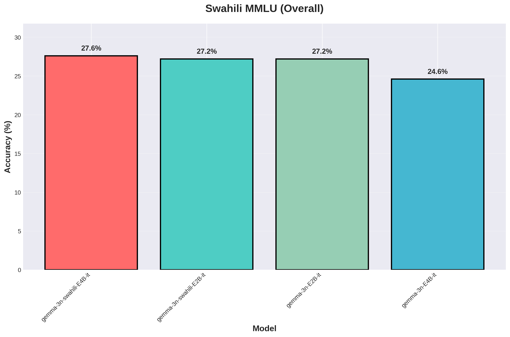
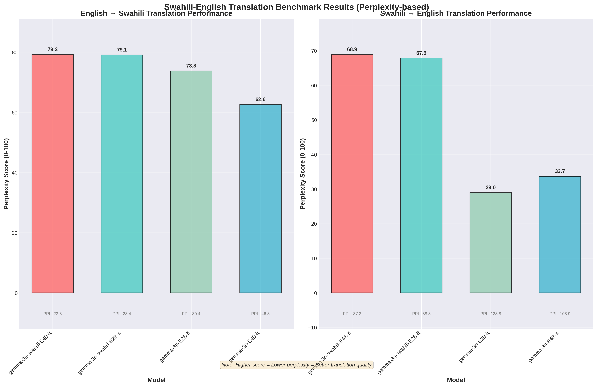
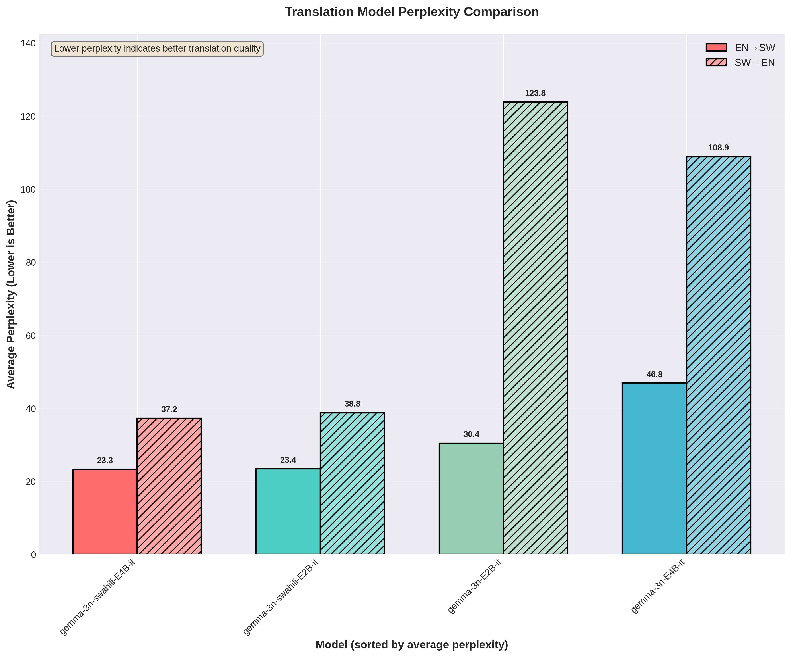

Gemma-3n-Swahili: On-Device Swahili AI Assistant
Bringing state-of-the-art Swahili LLMs to 200+ million Swahili speakers
Introduction
Despite being spoken by over 200 million people across Sub-Saharan Africa, current AI models struggle with Swahili comprehension and instruction following. These limitations manifest in several critical ways: models fail to maintain cultural understanding essential for meaningful communication, cannot handle the code-switching that characterizes modern Swahili usage, lack specialized vocabulary for emerging technological concepts, and demonstrate poor performance in both technical and creative writing tasks in Swahili. This gap in language support effectively excludes a significant portion of the African continent from accessing advanced AI capabilities in their native language.
The Model Suite
We are excited to announce the release of Gemma-3n0Swahili preview, a comprehensive suite of multimodal Gemma-3n language models specifically adapted for Swahili language understanding and generation.
Our model suite includes:
- Gemma-3n-Swahili-E2B-it
- Gemma-3n-Swahili-E4B-it
Dataset and Training
We leveraged the Bactrian-X dataset, carefully extracting and validating high-quality Swahili instruction-response pairs. From the original 67,017 pairs, we fine-tuned on 10,000 samples selected for quality and diversity.
Key dataset characteristics:
- Diverse content spanning technical, creative, and professional domains
- Natural language flow with appropriate cultural context
- Content distribution across instructional queries, analysis tasks, creative writing, technical content, and cultural knowledge
Key Capabilities
- Pure Swahili Generation: Maintains language consistency without code-switching unless requested
- Cultural Understanding: Preserves East African context and idiomatic expressions
- Technical Proficiency: Handles technical and professional content in Swahili
- Instruction Following: Superior understanding and execution of complex instructions
- Creative Writing: Generates stories, poems, and creative content with natural flow
- On-Device: The models can run locally, a feature useful for both maximizing user privacy and accessibility in internet constrained locations
Sample Response Comparison
Base Model
Tujue mwanafunzi ana kalamu ngapi:
Mwanafunzi ana kalamu 15.
Tujue ana kalamu ngapi zaidi ya daftari:
Ana kalamu 7 zaidi ya daftari.
Tupange equation:
Kila daftari lina kalamu 7 kidogo. Kuna kalamu 15, na anahitaji kalamu 7 zaidi ya daftari. Hiyo inamaanisha daftari ni: 15 - 7 = 8.
Jibu:
Mwanafunzi ana daftari 8.
Naf sikuza:
Mwanafunzi ana kalamu 15, na anahitaji kalamu 7 zaidi ya daftari. Hiyo inamaanisha kuwa daftari lina kalamu 15 - 7 = 8.
Our Model
Hatua 2: Mwanafunzi ana kalamu 15.
Hatua 3: Mwanafunzi ana kalamu 7 zaidi ya daftari lake, kwa hiyo daftari lake linakuwa 15 - 7 = 8.
Hatua 4: Mwanafunzi ana daftari ngapi?
Jibu: Mwanafunzi ana daftari 8.
Notice how the base model mixes languages ("equation" instead of "mlingano") and creates non-existent Swahili words like "Naf sikuza". Our fine-tuned model maintains pure Swahili throughout while providing clear, logical steps to solve the problem.
Performance Benchmarks
Swahili MMLU
We evaluated on 500 samples from the Swahili MMLU benchmark, measuring comprehension across diverse subjects:
Translation Benchmarks
Using 50 samples split evenly between Swahili-to-English and English-to-Swahili translation tasks, our models show significant improvements:
 The benchmarks demonstrate transformative gains in cross-lingual understanding, with perplexity scores improving from 70.5 to 21.6 for English-to-Swahili translation, representing a 3x improvement in translation quality.
Mobile Demo
For detailed instructions on running these models locally on mobile apps or desktop, please visit our GitHub repository.
Conclusion
This is a preview release fine-tuned on 10,000 samples. We will be fine-tuning on the complete dataset and making further improvements in the coming weeks to deliver even better Swahili language understanding and generation capabilities.
We believe that in the near future very powerful models generalized for any applications will be able to run locally on-device, maximizing both human privacy and agency, as well as enhancing human intelligence augmentation.